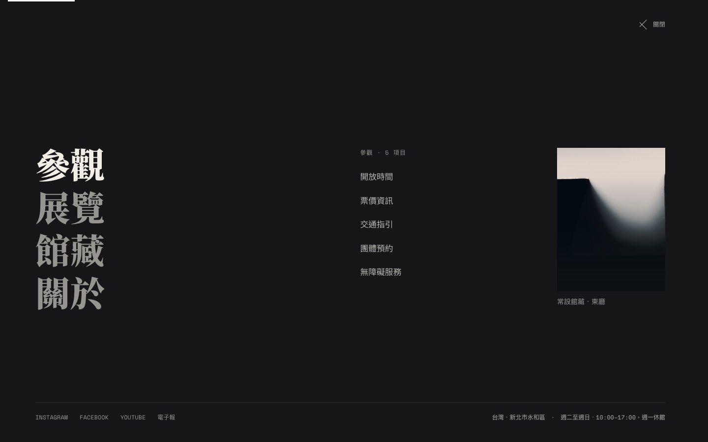
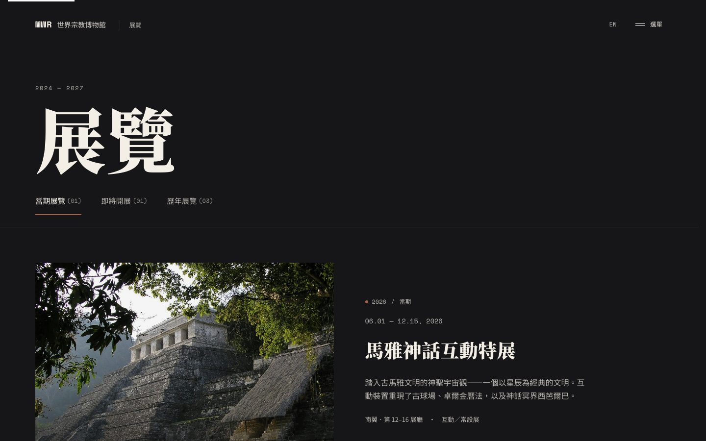
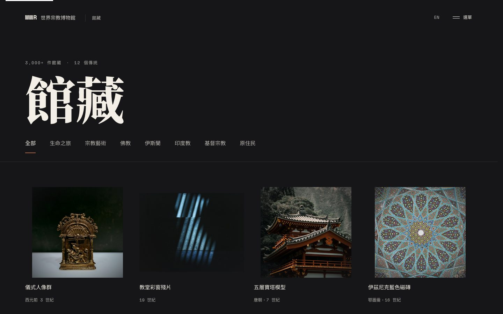

MWR 世界宗教博物館
虛構的世界宗教博物館網站，把一份靜態的 Figma Make 概念稿，實作成具備真實互動動效、雙語切換與無障礙支援的完整多頁網站。
把靜態設計稿，做成一個有呼吸感的真實網站。

專案總覽
MWR 世界宗教博物館是一個以「虛構博物館網站」為題的個人練習專案，起點是一份 Figma Make 產生的概念稿。目標不是設計一個新的資訊架構，而是測試 AI 輔助工作流能把一份高視覺複雜度、高動效需求的靜態設計，實作到多接近真實、可上線的程度——包含真實互動、雙語切換與無障礙支援。
問題
原始概念稿只是一組靜態畫面，導覽選單、輪播、篩選頁籤等關鍵互動都必須從頭定義行為與動效；同時全站採用深色主題並疊加大量攝影與動效，容易在氛圍感與可讀性之間失衡；館內參觀／展覽／館藏／關於／訪客服務橫跨 9 個頁面，也需要清楚的導覽避免使用者迷路。
靜態稿缺乏真實互動
導覽選單、虛擬導覽輪播、展覽篩選頁籤等關鍵互動，原始設計都只有畫面，沒有行為定義。
深色高氛圍但需兼顧可讀性
全站深色模式搭配大量攝影疊加濾鏡，容易在視覺氛圍與文字對比、可及性之間失衡。
多頁式資訊架構
參觀、展覽、館藏、關於、訪客服務橫跨 9 個頁面，選單項目一多容易讓使用者迷路。
研究
這是虛構機構、沒有真實使用者可以訪談。驗證方式改為：逐一比對 Figma Make 原始碼與畫面稿，確認動效與互動邏輯的真實設計意圖，並用 WCAG 對比標準檢查深色介面的文字可讀性。
Figma Make 原始碼本身就是可互動的程式，比純截圖能還原更多真實動效邏輯，值得直接參考而非憑截圖猜測。
深色背景疊加攝影濾鏡後，部分內文對比在 WCAG AA 標準下不足，需要另外收斂濾鏡強度。
導覽選單項目分散在多層次選單中時，使用者容易失去「目前在哪裡」的方向感。
設計策略
依上述觀察整理出三個設計原則，作為互動、動效與資訊架構決策的依據。
動效服務內容，不搶戲
呼吸感背景、灰階轉全彩揭露等動效保留但克制，優先確保文字可讀與操作不被干擾。
深色不等於低對比
文字與互動元件的對比度另外檢查，不因為深色氛圍犧牲可讀性。
選單即地圖
把五大分類收進單一全螢幕導覽疊層，用清楚分類與子選單降低多頁式架構的迷路風險。
關鍵決策
| 全螢幕導覽疊層 | 把參觀／展覽／館藏／關於等分類收進同一個全螢幕選單，滑鼠移到分類會換右側子選單與照片，取代原本分散的多層選單。 |
|---|---|
| 灰階轉全彩的圖片揭露 | 攝影素材進入畫面時先以灰階呈現，滾動就位後才緩緩轉為全彩，用一致的視覺語言標示內容載入，也呼應博物館策展的沉浸感。 |
| 拖曳式虛擬導覽輪播 | 把原本的靜態四宮格畫面改成可拖曳橫向捲動的卡片輪播，貼近實際導覽瀏覽的行為。 |
| 雙語與無障礙補強 | 全站補上 EN／中雙語切換，並逐頁檢查 WCAG 對比與鍵盤操作，讓深色高動效介面仍維持可讀性與可及性。 |
關鍵畫面
從首頁沉浸式視覺、全螢幕導覽疊層到展覽與館藏頁的篩選互動，維持一致的深色語彙與動效節奏。



驗證
虛構機構、練習性質專案，沒有真人使用者測試資源。驗證聚焦在自我檢核：用 Playwright 逐頁檢查零 console error、零版面溢出、導覽疊層開關與鍵盤操作是否正常，並人工核對深色文字與互動元件的對比度是否符合 WCAG AA。
反思
這個專案讓我練習把一份靜態、高視覺複雜度的設計稿，轉換成有真實互動邏輯、無障礙與雙語支援的完整網站，也更清楚 AI 輔助工作流在動效與互動實作上能承擔多少、哪些判斷仍必須自己把關——例如對比度、可讀性與整體資訊架構是否清楚。